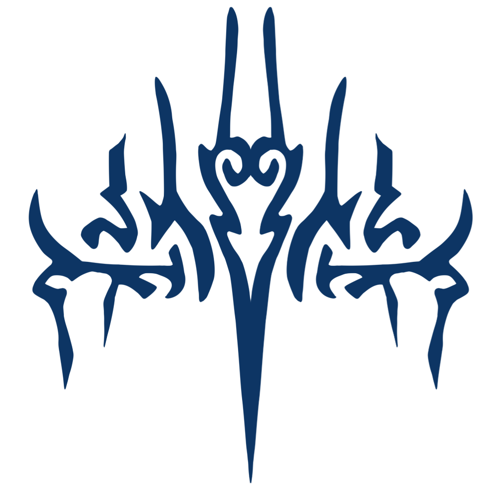
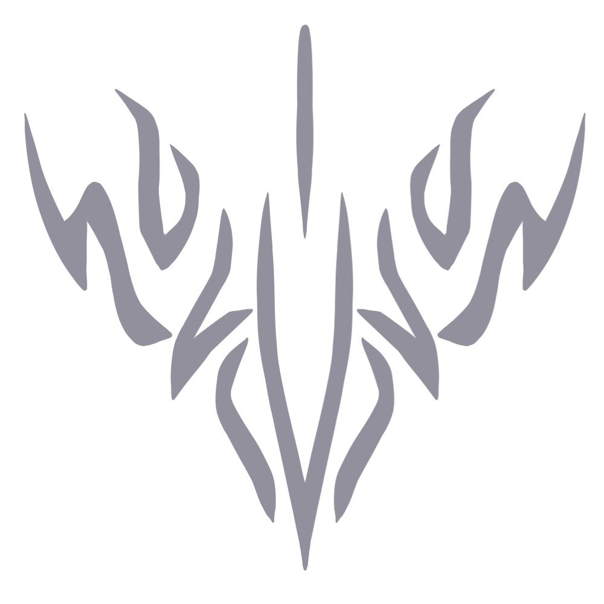
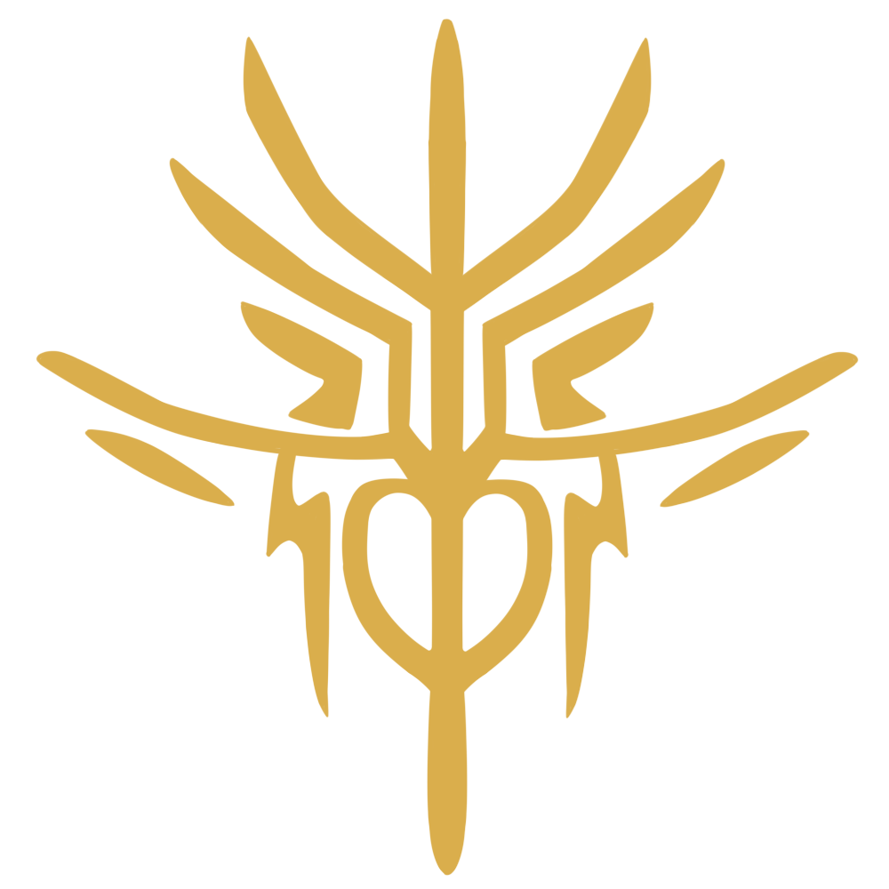

Las diez órdenes de caballeros radiantes
En El Archivo de las Tormentas, los Caballeros Radiantes son un grupo de usuarios de la magia denominados potenciadores, encargados de proteger Roshar durante las Desolaciones, eventos que tienen lugar de forma intermitente a lo largo de la historia, cuando las fuerzas oscuras asolan el planeta.
Cuando el destino de Roshar pende de un hilo, los espíritus llamados spren Radiantes buscan candidatos dignos de llevar el manto de un Caballero Radiante. Cuando un spren se vincula a un candidato, les conceden unos poderes llamados potencias. Existen diez tipos de spren Randiante, lo cual quiere decir que hay diez tipos de Caballeros Radiantes, que se organizan en diferentes Órdenes, cada una de las cuales tiene distintos juramentos, y defienden distintos Ideales.
Aún así, el primer juramento de los Caballeros Radiantes, siempre es el mismo:
"Vida antes que muerte. Fuerza antes que debilidad. Viaje antes que destino."

Corredor del Viento: Protegeré
Spren: Honorspren
Los juramentos de los Corredores del Viento giran en torno a la protección, en particular la defensa de los inocentes o de aquellos incapaces de protegerse a sí mismos.
Los Corredores del Viento tienden a atraer al tipo de personas “hermanos mayores”, que buscan proteger a los indefensos, pero que también disfrutan con la acción y que luchan por aquello en lo que creen. Básicamente son exploradores, aunque a menudo también trabajan como grupos de fuerzas especiales, capaces de llevar grupos de Radiantes tras las líneas enemigas en misiones secretas. Tienden a ser el tipo más convencional de soldados, creyendo en las estructuras de mando, las dinámicas de grupos, y la importancia de un escuadrón de hermanos y hermanas. A menudo tienen un número de escuderos mayor que el de las demás Órdenes, y se centran más en ser maestros de sus armas que ninguna otra Orden.

Rompedor del Cielo: Buscaré justicia
Spren: Altospren
Los juramentos de los Rompedores del Cielo giran en torno a la protección, luchar por causas justas, y reforzar las normas sociales. Por lo general, refuerzan la importancia de los códigos morales, las estructuras legales, y condiciones semejantes que protegen la civilización.
Los Rompedores del Cielo fueron los responsables del cumplimiento de las leyes de los Caballeros Radiantes, encargados a menudo de mantener la paz, vigilando a las demás Órdenes, y asegurándose de que ciertas fuerzas peligrosas de la oscuridad fueran contenidas en el mundo. En ocasiones, esto les ganó una mala reputación entre aquellas Órdenes de caballeros Radiantes con un pensamiento más libre, pero los Rompedores del Cielo (en su mayoría) no eran despiadados. Eran los que creían que nadie, ni siquiera un Radiante, debía estar por encima de ser cuestionado. Fueron los que llevaban a cabo la, ocasionalmente, dura tarea de asegurarse de que ciertas Órdenes no abusaran de sus poderes, convirtiéndose en tiranos, ya que los Rompedores del Cielo veían que aquellos con poderes podían oprimir fácilmente a quienes no tenían ninguno.
Tienden a atraer a quienes creen en la importancia del código legal, a aquellos con fuertes códigos morales propios, y a quienes piensan que la mejor defensa contra la anarquía son cosas como el patriotismo, la fibra moral, y las normas para gobernar el comportamiento. Tened en cuenta que en su encarnación actual, guiada por el Heraldo Nale en su locura, la Orden es más rígida que la antigua, que entendía que la ley no era perfecta, pero que representaba un ideal que alcanzar con el tiempo. Cualquiera que crea en encontrar la justicia verdadera, en defender a los inocentes, y castigar al culpable sería bien recibido en la orden.

Portador del Polvo: Buscaré el autocontrol
Spren: Cenizaspren
Los juramentos de los Portadores del Polvo giraban en torno a la responsabilidad. Estaban enfocados a comprender que los poderes que empleaban necesitaban ser canalizados de la forma apropiado, así como sus propios deseos y voluntades necesitaban formarse y moldearse adecuadamente. Cuando un Portador del Polvo progresaba en sus juramentos, se les enseñaban grandes poderes de destrucción, y son una de las únicas órdenes cuyas habilidades no estaban disponibles desde el principio, sino que se aprendían poco a poco, conforme pronunciaban los juramentos adecuados. Cada juramento llevaba a una mayor compresión del poder, de la naturaleza de tenerlo, y la responsabilidad asociada.
Los Portadores del Polvo, aunque a veces se opongan al nombre común de su orden y prefieran ser llamados Liberadores, son contradicciones vivientes entre los Caballeros Radiantes. Creen que un gran poder necesita de una gran fuerza de voluntad para controlarlo. Suelen atraer a los reparadores que gustan de profundizar en el alma y la forma de una cosa, romperla, y ver qué es lo que la hace funcionar. Aún así, sus juramentos están enfocados hacia el control. Han de ser capaces de controlar, contener, y canalizar el terrible poder que guardan en su interior. Tienden a oponerse a quienes se enfocan únicamente en su lado destructivo, ya que argumentan que para crear, uno debe comprender las piezas de la cosa que están intentando hacer. No se ven a sí mismos como algo relacionado con la destrucción, aunque sus poderes son los más destructivo de entre todas las órdenes de Caballeros Radiantes. En cambio, entienden que su naturaleza radica en el control, la precisión y la comprensión. Dentro de los Caballeros Radiantes, solían actuar como el equivalente de la artillería en un ejército moderno. Si querías un amplio sector de tierra destruido o calcinado, llamabas a los Portadores del Polvo. Con todo, a menudo también se les utilizaba como zapadores, ingenieros o estrategas.
Atraen a cualquiera que le guste desmontar las cosas, a quien le guste saber cómo funcionan las cosas. También atraen a quienes en ocasiones resultan temerarios, bravos soldados que se ven a sí mismos conteniendo y controlando una terrible destrucción para que no se vaya de las manos y dañe a los inocentes.

Danzante del Filo: Recordaré
Spren: Cultivacispren
Los juramentos de los Danzantes del Filo giran en torno a recordar a las personas comunes del mundo, aquellos que no son poderosos generales ni Radiantes. Con demasiada frecuencia, las acciones de los poderosos tiene terribles efectos sobre las personas sin voz, y los Danzantes del Filo consideran que es su solemne deber recordar que es a las personas a quienes realmente sirven.
Los Danzantes del Filo son conocidos por ser solícitos y elegantes. Entre los Caballeros Radiantes, ven como su deber el cuidar a la gente y suelen estar menos interesados en la guerra que en intentar mejorar la vida cotidiana de las personas corrientes. A menudo, una ciudad de tamaño medio tendría uno o dos Danzantes del Filo asignados de forma permanente, donde harían uso de la Regeneración para curar y trabajarían por el bien común de la ciudad.
Los Danzantes del Filo suelen encontrarse entre los más religiosos de los Radiantes, y son la Orden donde encontrarás con más probabilidad antiguos líderes religiosos que acabaron vinculando un spren. En tiempos de guerra, suelen actuar como médicos móviles, rehuyendo el combate real para curar o poner a resguardo a los heridos, o a quienes han quedado atrapados en terribles situaciones. Aún así, hay algunos que fueron conocidos por su gracia y habilidosa valentía en combate, ocasionalmente utilizados como exploradores o tropas de fuerzas especiales junto a un equipo de Corredores del Viento o Rompedores del Cielo. Uno no debe asumir jamás que los Danzantes del Filo sean vulgares por el simple hecho de ignorar la alta sociedad. Se les conoce como algunos de los Radiantes más elegantes y refinados.

Vigilante de la Verdad: Buscaré la verdad
Spren: nombre desconocido
Los juramentos de los Vigilantes de la Verdad giran en torno a encontrar la verdad última y compartirla. Están muy preocupados por el conocimiento y la adecuada explotación del mismo. Tened en cuenta que esto no debería ser confundido con los Tejedores de Luz, cuyos juramentos están más ligados a las verdades personales sobre ellos mismo, digamos que por una cuestión de auto-actualización. Los Vigilantes de la Verdad están más preocupados con las verdades fundamentales del universo, y si aquellos con el poder son o no honrados con aquellos a quienes lideran.
Los Vigilantes de la Verdad son percibidos como tranquilos, largamente conocidos como la Orden de Caballeros Radiantes más erudita. Tienden a atraer principalmente científicos, pero también pensadores eruditos de todo tipo. Esto es extensible a aquellos que normalmente podrían no ser conocidos como eruditos, sino como alguien con frecuencia consumido por sus propios pensamientos. En general, tienden a ser reservados, particularmente en persona, aunque una pequeña minoría de Vigilantes de la Verdad están muy preocupados por las acciones de los poderosos y se les podría comparar con reporteros de investigación. Estos dan a conocer sus opiniones en voz alta y con contundencia, especialmente si creen que alguien en una posición de poder está abusando del mismo, o mintiendo sobre verdades fundamentales. Tened en cuenta que, como pasa con todos los Caballeros Radiantes, hay un gran desencuentro dentro de la Orden sobre qué es la verdad. Aún así, los Vigilantes de la Verdad suelen abordar estas discusiones con entusiasmo, incluso cuando por lo general prefieren escribir sus opiniones más que decirlas en voz alta. Entre los Caballeros Radiantes, los Vigilantes de la Verdad tienden a ser quienes guardan el conocimiento y los secretos de la potenciación, y son quienes descubren la mayoría de los nuevos avances en cosas como la tecnología fabrial.

Tejedor de Luz: Diré mi verdad
Spren: Crípticos
Los juramentos de los Tejedores de Luz son una rareza, quizás porque su spren tiende a ser el más extraño entre los spren Radiante. En vez de pronunciar palabras específicas, o incluso palabras relacionadas con un tema concreto, los Tejedores de Luz dicen verdades sobre sí mismos, cosas que se admiten a sí mismo a fin de progresar como persona. Se teoriza que debido a que los Tejedores de Luz viven en la frontera entre la realidad y la ficción, es importante para ellos ser capaces de separar lo real de la mentira, y únicamente con la habilidad de hacerlo pueden avanzar.
Los Tejedores de Luz son los Radiantes más interesados en las artes, incluyendo todo tipo de artes visuales y el teatro. Tienen un espectro muy amplio de personalidades desde el pintor tranquilo e introspectivo hasta el sociable actor de teatro, con todas sus variedades intermedias. Lo que les une suele ser un amor por el arte, aunque hay unos pocos más interesados en la intriga, los secretos y el espionaje. Son los espías de los Caballeros Radiantes, y a menudo los demás desconfían de ellos (como por ejemplo, los estoicos Rompedores del Cielo) por su amor hacia el subterfugio. Poseen la reputación de tener la moral más laxa que otras Órdenes, pero los Tejedores de Luz pronto recalcan que sus valores personales son fuertes. Tan solo es que no sienten la necesidad de coincidir con lo que otras Órdenes más rígidas suelen requerir. Pueden ser menos concisos con sus juramentos, y muchos dicen que hay bastante más de Cultivación en ellos que de Honor (otros ponen en duda este estamento, diciendo que todas las Órdenes tienen una mezcla a partes iguales, a pesar de que algunos spren se llamen honorspren a sí mismos). Los Tejedores de Luz suelen ser espíritus libres, y varios dentro de su Orden ven la importancia del entretenimiento, la belleza y el arte dentro de la vida de una persona, y se esfuerzan para asegurarse de que el mundo no simplemente viva durante las Desolaciones, porque la supervivencia en sí misma no es suficiente, a menos de que haya un motivo por el que vivir.

Nominador de lo Otro: Alcanzaré mi potencial
Spren: Tintaspren
Al igual que los juramentos de los Tejedores de Luz y de los Rompedores del Cielo, los juramentos de los Nominadores de lo Otro, están enfocados hacia el individuo. En este caso, el tema es el progreso, mejorar con cada nuevo juramento, persiguiendo explorar su verdadero potencial y alcanzarlo. Es por ello que esta Orden está abierta a muchos tipos diferentes, mientras quieran mejorarse a sí mismos.
Reflexivos, cuidadosos y cautos, los Nominadores de lo Otro son reconocidos generalmente como los más sabios de los Radiantes. Buscan la mejora personal y una mejora a nivel personal en sus vidas, pero no se encuentran limitados por un tema o conjunto de Ideales específico. Ello los convierte en una de las órdenes más abiertas y acogedores, aunque tienden a atraer a quienes son menos llamativos. Cuentan con un cierto número de eruditos, pero también atraen a aquellos interesados en el liderazgo. Son buenos animando a los demás, pero algunos son conocidos por poner sus ojos en cosas que quieren, para luego conseguirlas. Dentro de los Caballeros Radiantes suelen estar entre los mejores tácticos, y son genios logísticos, en parte ayudados por sus habilidades para crear comida y agua para los ejércitos, pero también por su habilidad de moverse entrando y saliendo de Shadesmar.

Escultor de Voluntad: Buscaré la libertad
Spren: Lumispren, también llamados Alcanzadores
Los Escultores de Voluntad creen firmemente que la gente debería ser libre para tomar sus propias decisiones. Sus juramentos están enfocados hacia la libertad y permitir que la gente sea libre para expresarse y seguir su propio camino en la vida.
Los Escultores de Voluntad tiene reputación de atraer a constructores, artesanos, y creadores a los Radiantes. A pesar de eso, aunque este es un aspecto acertado, los miembros en sí de la Orden son mucho más variopintos. Sus poderes les encaminan hacia la creación cierto, pero sus juramentos están centrados en la libertad y la realización personal. Muchos entre los Escultores de Voluntad son guerreros que buscan liberar a quienes están cautivos, otros están centrados en una expresión personal radical. Los Escultores de Voluntad albergan muchos personajes sociables e incluso alegres que crean su propio camino, tomando la senda que ellos mismos eligen. Les une su amor por construir, pero algunos consideran que la construcción de la sociedad es más importante que la de las estructuras. Entre los Escultores de Voluntad, encontraréis tanto a quienes visten de modo muy conservador, como quienes visten con atuendos más atrevidos y originales. Tiene en común que ambos están de acuerdo en que la libertad para expresar quién eres es una parte importante. Entre los Radiantes, suelen estar enfocados a construir, formar, y crear infraestructuras. Durante la guerra, se les puede enviar a una ciudad para que la fortifiquen contra una invasión en ciernes. Antes o durante el despertar de las Desolaciones, enseñan a la gente cosas sobre saneamiento, trabajos con bronce, y otros temas esenciales. Allí donde encuentres a alguien resistiendo la tiranía o la opresión, a menudo encontrarás a un Escultor de Voluntad animándole.

Custodio de Piedra: Estaré allí cuando se me necesite
Spren: nombre desconocido
Los Custodios de Piedra se centran en las dinámicas de grupo, en aprender a trabajar con otros, y en estar ahí para quienes les necesiten. Anteponen el interés de los demás al suyo propio, y no retuercen sus Ideales por cuestiones de conveniencia.
Los Custodios de Piedra son la infantería y las tropas terrestres de los Radiantes, y son conocidos por ser sus mejores soldados (un título que en ocasiones disputan los Corredores del Viento). Suelen atraer a aquellos más interesados en la guerra, el combate con armas, o los deportes de cualquier tipo. Les gustan los retos, y en tiempos de paz se les ve inmersos (y corriendo hacia) varios eventos deportivos tanto de naturaleza militar como de otra naturaleza. Muchos disfrutan estando al aire libre, y encontrarás entre ellos entusiastas de la exploración, así como aquellos que simplemente disfrutan del aire fresco. Suelen ser conocidos por su actitud dinámica y por hacerse cargo de proyectos gigantescos (que a veces son más de lo que pueden manejar). Con todo, muchos están de acuerdo en que el principal atributo de los Custodios de Piedra es su fiabilidad. Aunque en ocasiones sean sociables, jamás son caprichosos. Si un Custodio de Piedra es amigo tuyo, estará allí para ti, y ese es el dogma principal de su Orden: estar allí cuando se les necesita. Otro atributo clave es su habilidad para afrontar una situación difícil con pocos recursos y hacer algo mejor de ella. Aunque no se les conoce como inventores o creadores, son buenos improvisando soluciones a problemas en el momento.

Forjador de Vínculos: Uniré
Spren: Padre Tormenta, Vigilante Nocturna, Hermano
Los Forjadores de Vínculos están centrados en la unidad, la unificación, y en unificar a las personas. Con todo, esta es una cuestión un tanto vaga, ya que hay tan pocos Forjadores de Vínculos (y las tres fuentes de sus poderes difieren mucho en cuanto a personalidad) que sus juramentos pueden acabar tomando una variedad de formas, dependiendo de la situación.
Cualquiera puede convertirse en Forjador de Vínculos, sujeto a persuadir a uno de los tres spren que garantizan los poderes de Forjador de Vínculos. Estos poderes tienden a funcionar de forma distinta de un Forjador de Vínculos a otro, e incluso las potencias que comparten con otras Órdenes suelen funcionar de un modo distinto para los Forjadores de Vínculos.
Los Forjadores de Vínculos son poco frecuentes, en el sentido de que nunca hay más de tres miembros completos. Históricamente, trabajaron para resolver disputas y ayudar a organizar gobiernos funcionales. Aunque únicamente puedan haber tres miembros completos, han habido épocas en las que algunos Forjadores de Vínculos tomaron escuderos. Además, muchos entre el séquito que protegían a los Forjadores de Vínculos fueron considerados miembros de la Orden, llegando incluso a pronunciar sus juramentos, aunque nunca tuvieron un spren ni llegarían a tenerlo. Algunas personas dijeron que esta es la forma más pura de ser un radiante, porque fueron juramentos pronunciados no en nombre de ganar unos poderes, sino simplemente, por decir los propios juramentos en sí.
Generalmente, los Forjadores de Vínculos son el corazón y alma de los radiantes, los más protegidos y tenidos en alta consideración por las Órdenes, capaces de hacer cosas increíbles con la naturaleza de sus juramentos, vínculos, y poder. La Orden, incluyendo los ya mencionados escuderos y asistentes, tendían a atraer a los pacificadores del mundo, a quienes quieren unir a la gente, en vez de dividirla.
